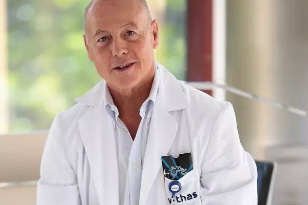

Conoce las historias de lo importante que es el deporte en la vida diaria.
Técnico fitness y autor de ‘El gym y el ñam: las claves para el equilibrio físico y mental’
Eres ingeniero biomédico con máster en Monitorización de Ensayos Clínicos y Marketing farmacéutico, la pregunta obligada es ¿qué te hizo dar el paso a dedicarte al mundo de las redes sociales?
Compaginé durante mucho tiempo mis distintos trabajos de oficina con mi página de Instagram en la que siempre me ha gustado compartir mi diario fitness, enfocado casi siempre al ocio, pero con ganas de crear una comunidad muy sana y en la que pasármelo bien. Cuando llegó la pandemia empecé a dedicarle más tiempo por mi salud mental, dedicaba mi tiempo a generar contenido, como entrenamientos, recetas y herramientas saludables para que todo el mundo se cuidase, para que mi gran familia virtual estuviese sana.
Has reconocido que en tu niñez y adolescencia tenías sobrepeso por unos malos hábitos alimenticios y poca actividad física. Los datos del Ministerio de Sanidad indican que casi el 25% de los niños tiene un exceso de peso. ¿A qué crees que se debe y cómo se puede cambiar esta tendencia en los niños?
Creo que se debe por un lado la falta de movimiento de los niños y, por otro, a los malos hábitos alimentarios que tienen, que muchas veces vienen por los padres y el colegio. No es que los padres den mal de comer a sus hijos adrede, no quiero decir que por esto los padres sean malos, ni mucho menos. Sin ir más lejos, a mí me alimentaban muy bien y cuando era un niño preadolescente empecé a comer muchas guarrerías y el problema era que no se me prohibía nada en ningún momento.
Deportista, bloguera y autora de “Be real not perfect”
De las tres aes de la vida saludable –Actividad, Alimentación y Actitud– que planteas ¿cuál es la más importante para ti?
La actitud, sin duda. Sin una actitud positiva frente a la vida y las experiencias que vas acumulando, no se pueden llevar a cabo las otras dos. Aunque sin una correcta alimentación y sin realizar actividad física tampoco es posible conseguir mantener una buena actitud. Están relacionadas entre sí, pero si tuviera que aconsejar cuál de ellas es la primera que hay que empezar a trabajar, diría que la actitud.
¿Cómo consigues salir a correr, entrenar triatlón, hacer paddle surf y practicar yoga sin dejar a un lado tus estudios y tu vida diaria?
No es una tarea fácil, es necesario organizarse muy bien y establecer prioridades, pero al final cuando te dedicas a aquello que realmente te apasiona sacas tiempo de donde sea.
Dices que te gusta probar cosas nuevas e investigar sobre lo que te sienta bien y lo que no. ¿Fue así como descubriste tus atractivos y saludables Smoothies Bowls?
Efectivamente así fue; me baso en mi propia experiencia, y para ello fui probando combinaciones de frutas y verduras y observando después cuáles me encajaban y cuáles me hacían sentir mejor. En cuanto a mis Smoothies Bowls favoritos, los que más me gustan son el açaí y también el de Pitaya; ambos son muy dulces.
Especialista en Medicina del Trabajo y del Deporte y director de la Unidad de Salud Deportiva de Vithas Internacional
El coronavirus no distingue entre edades, profesiones o clases sociales. Nadie está a salvo de él. Tampoco los deportistas. En el caso de los profesionales, ¿el haber sufrido esta enfermedad puede dejar secuelas físicas que se manifiesten en la vuelta a los entrenamientos y la competición?
La enfermedad por COVID-19 da un cuadro muy heterogéneo en la población. Desde pasar completamente asintomático a cuadros muy graves de afectación multisistémica, fundamentalmente pulmonar. Las secuelas pulmonares son evidentes después de una neumonía bilateral y serán la principal secuela en forma de fibrosis y focos de atelectasia y pérdida alveolar. Pero hay más secuelas que pueden quedar tras el COVID-19, como resultado de la afectación de corazón y aparato cardiovascular, problemas neurológicos, etcétera. Realmente no sabemos nada y será en los próximos meses cuando vayamos viendo las consecuencias a medio y largo plazo que ha tenido esta enfermedad que, por cierto, no ha acabado ni mucho menos.
Los deportistas profesionales, no obstante, son un porcentaje ínfimo del total de la población que en países como España practica deporte. ¿Pueden ser mayores o más peligrosas esas secuelas entre estos deportistas aficionados?
No. Las secuelas tendrán que ver con la carga vírica de los pacientes, los cuadros clínicos que hayan desarrollado y otros factores que estarán por descubrir. Para una infección como ésta, el ser deportista puede que te dé fuerzas para resistirla, pero no te hace distinto para padecerla o desarrollar determinadas secuelas.